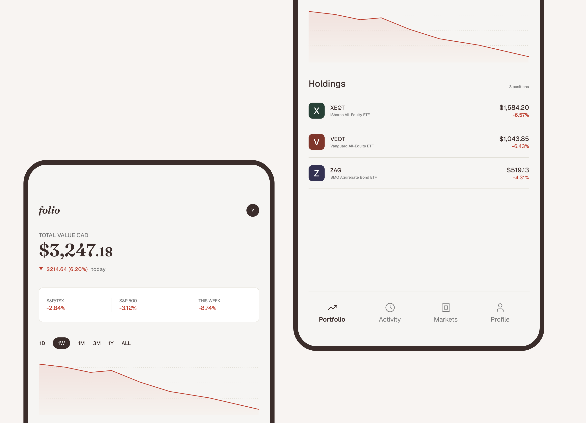
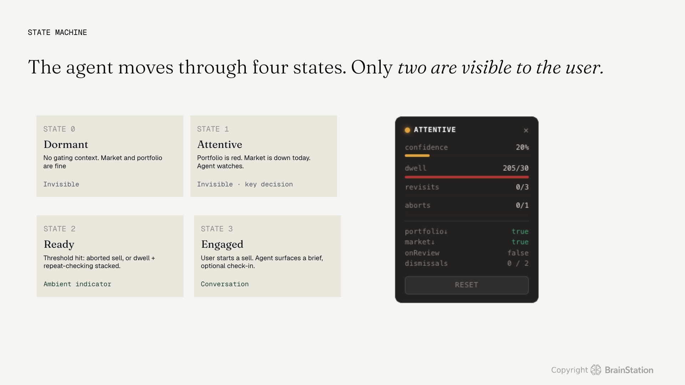
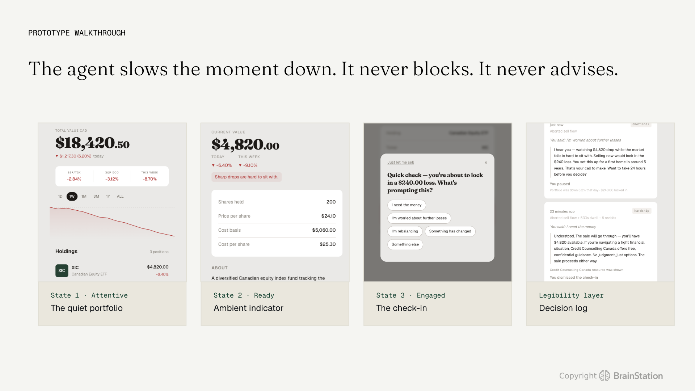
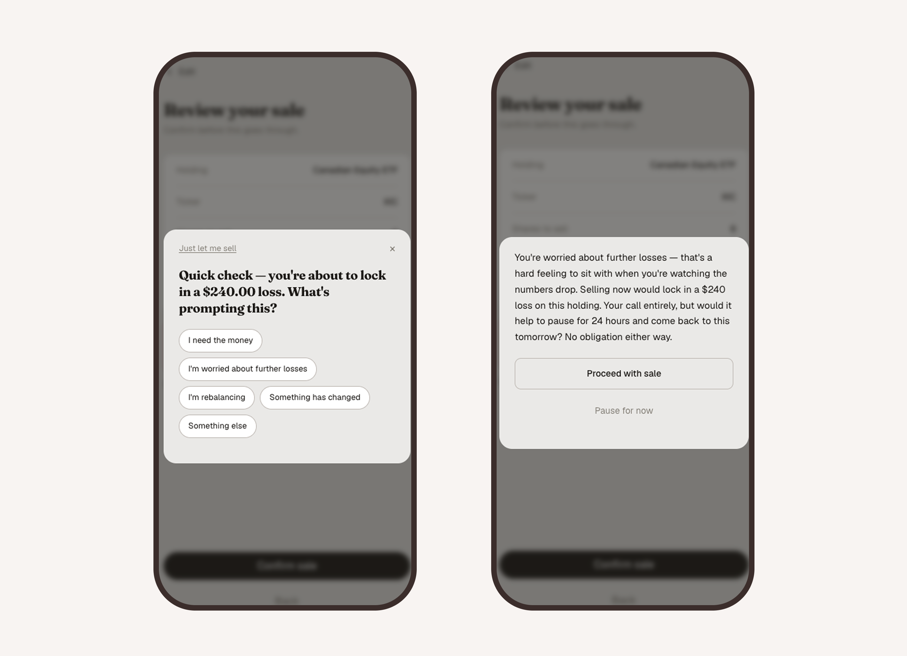
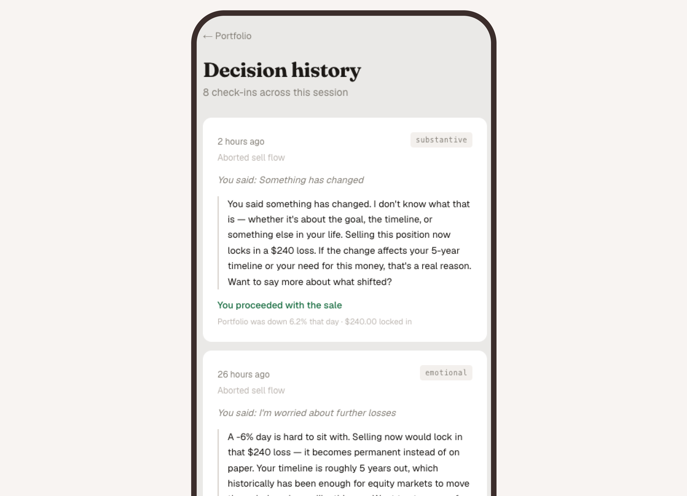

An AI agent built for one moment: when a first-time investor is about to sell during a market downturn. The design challenge wasn't what the agent says. It was when it has earned the right to speak at all.
Try the working prototype
A new investor, eight months in, first real account, opens the app during a downturn. Sees red. Closes it. Opens it again before lunch. Doesn't know if this is normal. The behaviour has a name: myopic loss aversion. Losses feel about twice as bad as equivalent gains feel good, and frequent checking sharpens the asymmetry until selling at the worst possible moment starts to feel like the responsible thing to do..
I know investing is a long game…but it's hard not to panic when you see red everywhere.
— Avelina, 26, first-time investor (research persona)The usual app response is one of two things. Nothing, or a generic "are you sure?" modal. One ignores the moment. The other condescends to it. Neither earns trust when it actually matters.
Design challenge: How might an AI agent intervene at the panic-sell moment without taking the decision away from the user, without predicting the market, and without speaking when it hasn't earned the right to?
Most AI products are racing to do more. More suggestions, more automation, more presence. Research into AI behavioural-bias failures kept surfacing the same pattern: systems that try harder to help often make things worse. They over-trigger, train people to ignore them, and quietly tip into advice. A finance agent that tries to "solve" panic by being more assertive is the failure mode, not the fix.
That reframed the project. The spine of the case study isn't what the agent says. It's when the agent doesn't speak, and why.
The original framing
How do we stop users from panic-selling?
The reframe
How do we design an agent that earns the right to interrupt, and steps aside the moment it has done its job?

The Check-In Agent is one feature inside a simulated Canadian investment app, scoped to one moment in one user's life: their first real downturn. The agent runs as a four-state machine. Two states are invisible by design.
In Dormant, nothing is wrong. In Attentive, the conditions for panic are present — portfolio in red, market down — and the agent is watching, but the user sees nothing. This was the key decision: surveillance without performance. An agent that signals it's watching changes the behaviour it's trying to read. In Ready, behavioural signals have crossed a threshold and an ambient indicator appears. In Engaged, the user has actually initiated a sell, and the agent surfaces a brief, optional check-in.
The whole design rests on one constraint: the agent never blocks. The path to execute the sale is always visible, always one tap away. The agent's job is not to stop the action. It is to make sure the person taking it knows what they are doing and why.

A single behavioural signal (dwell time on the portfolio, repeat app opens) is too noisy on its own. Acting on one of them produces false positives, trains the user to ignore the agent, and turns intervention into noise. The trigger model is hierarchical: an aborted sell flow is the strongest single signal of hesitation and can fire on its own. Everything else has to stack. Anxiety alone is not enough. Hesitation is.
No behavioural signal fires unless the user's portfolio is in the red and the market is down today. Both gates must be open. This sits underneath the trigger logic as a non-negotiable filter, because a user selling on a normal day has a normal reason. The agent only ever shows up in the conversation it was built for.
The check-in is three sentences. It names the user's actual numbers, states what selling now would lock in, and asks one question: what's prompting this? The agent doesn't guess at the user's emotional state. "You seem scared" is forbidden in the system prompt. "A lot of people find this part hard" is permitted. The user's answer is what does the work—speaking aloud the reason for selling is often enough to surface whether the reason is substantive, emotional, or absent.
The system prompt is mostly a list of refusals. If the user dismisses the check-in, the agent steps aside and logs silently—max two engagements per session, same message never twice. If the user asks for advice, the agent redirects without giving any. If the user names hardship, the agent acknowledges, confirms the sale is going through, and offers one verified resource. If the user pushes back on the agent's right to be there, the agent agrees: the check-in is optional, the sale is yours.


A working agent that exercises judgment about its own silence, and a thesis about restraint that survived contact with the build.
A working prototype deployed at checkin-agent.vercel.app, simulating the portfolio, the signal accumulation, and the check-in surface. The agent itself runs on Claude via a system-prompted API endpoint. The trigger logic, voice principles, hard constraints, and failure modes are baked into a single system prompt that holds across the prototype's full scenario.
The restraint posture stayed clear of the advice and suitability zone that triggers CSA oversight — an alignment with Canadian regulatory guidance that was lucky in origin and intentional in the end. The most useful evidence the design works is what the agent does not do. It does not predict. It does not recommend. It does not block. It does not appear when it hasn't been earned.
The case study's positioning held: most AI products show what an AI does. This one shows when it doesn't speak, and why.
Try the prototypeGet real behavioural data before locking the thresholds. Every signal threshold in the prototype is an educated guess informed by behavioural finance literature. Three minutes of dwell. Three app opens an hour. An aborted sell. Those numbers are defensible in a class presentation. They are not defensible in production. The trigger logic is only as good as the data calibrating it, and the only honest way to calibrate it is to watch what actual first-time investors do during an actual downturn. The architecture is right. The numbers need to be earned.
Bring compliance in at the design phase, not the review phase. The agent's restraint kept it on safe regulatory ground, the constraints in the system prompt happen to line up with CSA expectations around advice, suitability, and behavioural-design risks. That alignment was a hunch with research behind it, not a substitute for legal review. In a real deployment, a Canadian compliance lawyer belongs in the design conversation from the first session, not the last one. The check-in language, the failure modes, the hardship resource, the decision log, each one has a regulatory dimension that a designer can sense but cannot certify.
Protected work
Enter the password to view this case study.